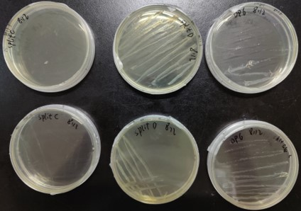
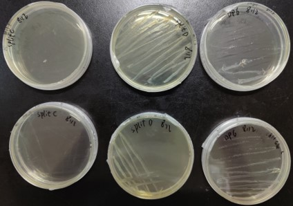
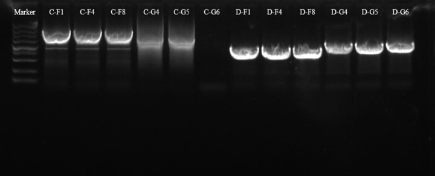
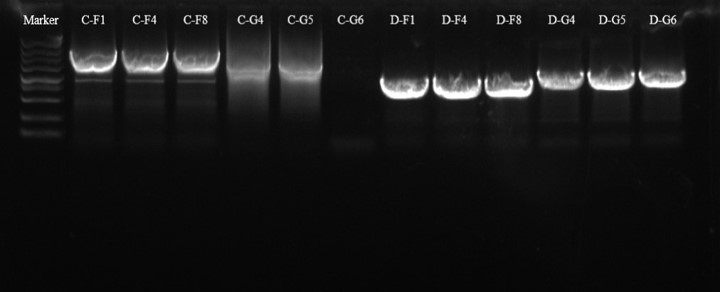

Day1


2023/8/8
Member: H.T.Q
Experiment:
1. PCR to obtain AP2 for positive selection (AP2-pos)
(1) AP2 for Positive selection:
① Vector:
Template: AP-A
Primers: AP-A-F/R (zyh)
Resistance: AmpR
4603 bp, Tm 55℃; extension: 2min20s
② Insert fragment:
Template: 2023quanhechengjiyin(plasmid)
Primers: eGFP-F/R (zyh)
736 bp, Tm 55℃ ; extension : 25s
(2) Plasmid for positive control:
① Vector :
Template: AP-A
Primers: yangxingduizhao-zaiti-F/R (liuyi)
3304 bp, Tm 57℃; extension : 1min40s
Resistance: AmpR
② Insert fragment:
Template : 2023quanhechengjiyin(plasmid)
Primers : yangxingduizhao-pianduan-F/R(liuyi)
1044 bp, Tm 57℃; extension : 35s
Member: H.T.Q
Experiment:
1.Fastpure Gel DNA extraction (yang-V, yang-In, AP2-V, AP2-In) 120V，20min, Marker : DL5000
Member: Z.M.L
Experiment:
1.Gel DNA Extraction for plasmid 2R, 14R, 15R, 16R
Result:
1.Concentrations：
2R:80.67 ng/μL, 20.3, 2.21
14R:155.79 ng/μL, 2.02, 2.3
15R:153.14 ng/μL, 2.05, 2.34
16R:157.37 ng/μL, 2.01, 2.29
Member: L.Y
Experiment:
1.Fastpure Gel DNA extraction Of AP-T7-A-P22-FdeR plasmid
2.Send AP-T7-A and FdeR Fragment recombinant plasmid to sequence
3.Colonies PCR of The bacteria which was transformed into AP-T7-A and FdeR Fragment recombinant plasmid to verify the fragment is correct length
Member: Y.Y.X
Experiment:
1.Plasmid extraction twice
(1) Strain: DH5α
(2) Plasmid: fdeR-pQE-P22 recombinant plasmid
2.Transfornation
(1) Strain: BL21
(2) Resistance: KanR
(3) Plasmid: fdeR-pQE-P22 recombinant plasmid
Member: L.Y.X
Experiment:
1.design the primers of AP-2neg, including rfp,vevtor-AP and gIIIneg
Result:
1.Primers had been ordered

Day4

2023/8/11
Member: H.T.Q
Experiment:
1. Determination of fluorescence intensity after naringenin induction is completed
(1) Sampling interval: 12h and 24h
(2) Groups: ① positive control: pQE-fdeR (Inducible promoter)
② negative control: pQE
③ treatment group: pQE-P22-fdeR
(3) wavelength: Ex=476nm/ Ex=514nm and Ex=486nm/ Ex=528nm and Ex=478nm/ Ex=516nm
(4) plate type: 96 well costar blk/clrbtm
2. Data analysis
Model: Hill function
Member: Z.M.L, Y.Y.X
Experiment:
1.Culture single colonies of strains No.2 and No.14 containing the plasimd of pQE-fdeR and divide them into 11 groups, respectly.Each group was added different concentration of NG (0, 0.05, 0.10, 0.15, 0.20, 0.25, 0.30, 0.35, 0.40, 0.45, 0.50 mM) and cultured for 12 h.The fluorescence intensity of each group of cells was measured in triplicate by microplate reader.
2.Design a pair of primers to replace the RBS of the effector module in P22-fdeR-eGFP with an optimized RBS sequence.
3.Culture single colonies of the strains No.2 and No.14 containing the plasimd of pQE-fdeR and divide them into 11 groups, respectly.Each group was added different concentration of NG (0, 0.05, 0.10, 0.15, 0.20, 0.25, 0.30, 0.35, 0.40, 0.45, 0.50 mM) and cultured for 24 h.The fluorescence intensity of each group of cells was measured in triplicate by microplate reader.
Result:
The biosensor response to naringenin was enhanced after replacing the inducible promoter with the P22 promoter, with a clear trend in the response curve. The results were in line with the original research.
Member: L.Y
Experiment:
1. Colony PCR and Select positive colonies to propagate DH5α Colonies transformed in AP-T7-A recombinant plasmids are subjected to colony PCR The resulting positive clones are cultured and sent for sequencing
2. Culture bacteria in biological shaker Strain: DH5α
37℃ culture overnight in biological shaker
Member: L.Y.X
Experiment:
1.get single colony from the Amp dishes- 6 colones from single and another 6 clones form multis
2.PCR to confirm whether4 bottles of sterile water,the water in 4nd floor,split2，split2
4.12,splitD2 splitD1 4.12 and splitD2 4.12(altogether 11 treatments) contains WT phage
Result:
2、contamination:split2C split2D,this results also demonstrate that the DIW in 1st floor was contaminated
Day6

2023/8/13
Member: H.T.Q
Experiment:
Preservation of AP2-pos ( DH5α) strains using a 50% glycerol solution at -80℃
Member: Z.M.L, Y.Y.X
Experiment:
1.PCR to obtain fragment AP-A-fdeR-SplitC and AP-A-fdeR-SplitD
2.Agarose gel (1%) electrophoresis (200V, 25min) for AP-A-fdeR-SplitC and AP-A-fdeR-SplitD。
3.Gel DNA Extraction for AP-A-fdeR-SplitC, AP-A-fdeR-SplitD-F, AP-A-fdeR-SplitD-G
4.Culture DP6、pBT137-SplitC、pBT137-SplitD strains.
Result:
2.Concentation:
SplitD-1:70.9 ng/μL, 1.74, 1.10
SplitD-2:40 ng/μL.45, 1.81, 1.43
3.Concentration:
SpliC:853.15 ng/μL, 1.97, 2.47
 


 

Day2

2023/8/9
Member: H.T.Q
Experiment:
1. ClonExpress
(1) AP2 for positive selection:
① AP2-A-1: V-2, In-1
② AP2-A-2: V-2, In-2
(2) Plasmid for positive control:
① yang-eGFP-1: V-1, In-1
② yang-eGFP-2: V-2, In-2
2. Transformatin the AP2 into DH5α competent cell
Strains: DH5α
Resistance: AmpR (LB)
Member: Z.M.L, H.T.Q
Experiment:
1.Autoclave sterilization of 10 μL pipette tips、200 μL pipette tips、1000 μL pipette tips、ddH2O、50% glycerin
Member: L.Y, Y.Y.X
Experiment:
1.Colony PCR to verfied if the selected colonies containing the recombinant plasimd of pQE and FdeR-P22 recombinant plasmid
Member: L.Y.X
Experiment:
1.PCR the fragements of rfp,vevtor-AP and gIIIneg
2.Gel DNA Extraction of rfp,vevtor-AP and gIIIneg
Result:
Gel DNA Extraction was failed, because buffer GW stayed 20min in FastPure DNA Mini Columns-G
Day3

2023/8/10
Member: H.T.Q
Experiment:
1. Colony PCR to verfied if the selected colonies containing the recombinant plasimd of AP2 for positive selection
(1) Strains: DH5α
(2) 894 bp, Tm 58℃; extension: 15s
(3) cuture DH5α strains (Amp) for sequencing
2. Plasmid extraction:AP2
Member: Z.M.L
Experiment:
1.Culture two test tubes of strains containing the plasimd of pQE-de CMR and two test tubes of strains containing the plasimd of pQE-fdeR
2.Culture strains containing the plasimd of pQE-de CMR, pQE-pT7-LacO-fdeR, pQE-eGFP, pQE-p22-fdeR, respectly.The fluorescence intensity of each group of cells was measured in triplicate by microplate reader.
Result:
The fluorescence intensity of the strain containing the plasimd of pQE-p22-fdeR was significantly higher than other groups
Member: L.Y
Experiment:
1. Colony PCR and Select positive colonies to propagate
(1)Colony PCR to verfied if the selected colonies containing the recombinant plasimd of pQE and FdeR recombinant plasmid by using BL21 colonies
2. Culture bacteria in biological shaker
Strain: BL21
37℃ culture overnight in biological shaker
Result:
1.Transformants are cultured and sent for sequencing
Member: Y.Y.X
Experiment:
Purpose: Verify the feasibility of the naringenin-induced pathway with P22 promoter.
(1) Culture the strains of the second positive transformant and the fourteenth positive transformant in a conical fask till the OD600 was between 0.4 and 0.6.
(2) Culture the bacteria with pqe-fdeR and the bacteria with pQE plasmid that doesn't have CmR in 5 mL LB medium till the OD600 was between 0.4 and 0.6.
(3) Measured the fluorescence and OD600 of the bacteria solution.
(4) Separate the strains of the second positive transformant and the fourteenth positive transformant respectively into 11 tubes (3 mL). Add naringenin into the groups of tubes respectively according to a certain concentration gradient (mM):
0、0.05、0.1、0.15、0.2、0.25、0.3、0.35、0.4、0.45、0.5.
Member: L.Y.X
Experiment:
1.PCR the fragements of rfp,vevtor-AP and gIIIneg and gel DNA extraction
2.One step clone the rfp,vevtor-AP and gIIIneg
3.transfer the recombinant plasmid of AP2-neg into DH5-α
4.PCR to vertify the water in first floor and split2 4.12 whether has the contamination of WT phage
Result:
1.the concentration of the 3 fragments were about 100ng per ul
2.when using one step clone kit,I both used single fragment kit and mulitple fragments kit. The next day I saw that the both dishes had grown single colony，which turned out that single fragment kit had the ability to recombinate mulitiple fragments
3.Both the water on the 1st floor and split4.12 were contaminated with wild-type phage
Day5

2023/8/12
Member: H.T.Q
Experiment:
1. Design a pair of ep-primers to obtain fdeR gene and AP-A-P22 vector
Insert fragment primers: APA-epPCR-fragment-F-0812 / PCR-fragment-R-ep2-0814
Vector primers: AP-A-epvector-F2 / AP-A-epvector-R-0812
2. 2xYT/LB medium and test tube
Member: Z.M.L
Experiment:
1. Prepare 1M glucose solution 50 mL, filter the bacteria and store at 4℃.
Member: L.Y
Experiment:
1.Fastpure Gel DNA extraction Of AP-T7-A-P22-FdeR plasmid and GFP-positive lasmid
2.send AP-T7-A-P22-FdeR plasmid and GFP-positive plasmid to sequence
Member: Y.Y.X
Experiment:
Prepare 2xYT medium with deionized water on the fourth floor.
Member: L.Y.X
Experiment:
1.Sequencing of AP-2neg plasmids
Result:
1.The recombination was successful
Day7

2023/8/14
Member: H.T.Q
Experiment:
Design a pair of ep-primers to obtain fdeR gene and pQE vector
Insert fragment primers: ep-fragment-F / PCR-fragment-R-ep2-0814
Vector primers: AP-A-epvector-F2 / pQE-epvector (final)-R-0814
Member: Y.Y.X
Experiment:
Plasmid extraction to obtain DP6 and split D.
Result:
DNA concentration:
DP6①-227.45 ng/μL;
DP6②-153.89 ng/μL;
D1-57.31 ng/μL;
D2-39.90 ng/μL;
D3-38.14 ng/μL.
Member: Z.M.L
Experiment:
1.Construct recombinant plasmids by ClonExpress technolog using AP-A-fdeR-SplitD-F or AP-A-fdeR-SplitD-G gene and AP-A-fdeR-SplitC vector.
2.Preservation of strains containing the plasmid of DP6 and the plasmid of SplitD for 4 test tubes respectly, using a 50% glycerol solution at -80℃.
3.Plasmid extraction for the plasmid of DP6 and the plasmid of SplitD and sequence.
Result:
3.Concentration：
DP6①：227.45 ng/μL, 2.01, 2.35
DP6②:153.89 ng/μL, 1.98, 2.27
D1:57.3 ng/μL, 1.53, 1.66
D2:39.90 ng/μL, 1.83, 1.85
D3:38.14 ng/μL, 1.93, 1.43
Member: L.Y
Experiment:
(1)New primers were used for Colony PCR to verfied if the selected colonies containing the recombinant plasimd of pQE and FdeR recombinant plasmid and
(2)Use Agarose gel (1%) electrophoresis (150V, 20min) to show the results
(2)Design new primers of FdeRAPA recombinant plasmid
Result:
The results is not so correct which means recombinant plasmid was constructed unsuccessfully
so we decide to recombinant the vector and fragment using pQE-FdeR as template.